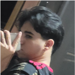

Minhas redes sociais
Quem sou?
Sou Davi Cândido, sempre fui um aluno dedicado e reconhecido por minha excelência acadêmica. Estive dentro dos selecionados para o Projeto Altas Habilidades da Fundação Zerrenner, obtendo o 1º lugar geral no ensino médio. Fui medalhista de diversas olimpíadas, como ONC, OBA, OBR, OBS, e obtive destaque na robótica, conquistando o 1º lugar na Carga Connect. Participei em todos os meus anos de ensino médio de diversas feiras científicas, como FEBRACE e 1000 Futuros Cientistas, atuei como pesquisador e assistente bibliográfico sobre Plataformas Digitais, também participo de projetos sociais, sendo monitor/professor de programação e robótica. E atualmente, curso Ciência da Computação na PUC-Minas.
Como falar comigo?
 /DaviCandido - Se inscreva no meu canal no youtube
/DaviCandido - Se inscreva no meu canal no youtube /DaviKandido - Veja meu GitHub
/DaviKandido - Veja meu GitHub /DavyKandido - Me siga no instagram
/DavyKandido - Me siga no instagram /davi-candido-de-almeida - Me siga no linkedin
/davi-candido-de-almeida - Me siga no linkedin /Daiivys - Veja o meu X (antigo Twitter)
/Daiivys - Veja o meu X (antigo Twitter) /davykandido- Me siga no Facebook
/davykandido- Me siga no Facebook